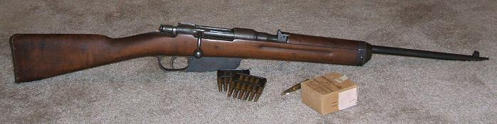

[Previous entry: "Daniel Castillo, age 17, SWAT victim"] [Main Index] [Next entry: "New libertarian kids' book: The Walton Street Tycoons"]
02/18/2007 Archived Entry: "New truck rifle"
THE BUDGET TRUCK RIFLE
Blogispondent Ian here. As I was out and about this weekend, a buddy and I happened to stop in this little antique store that does a modest volume of gun sales. As we were poking around the inventory, the owner mentioned that one particular rack was all old inventory that he just wanted to get rid of - so if we were interested in anything there, today was Deal Day.
I hemmed and hawed over one particular little carbine, a mildly sporterized M/38 Carcano. It just looked lonely, and the price tag of $75 appealed to my wallet. I decided to offer the shopkeeper $50. Hard to go wrong with a $50 rifle, right? Well, the gentleman's response took me aback a bit. He said, "No. But I'll take $35 for it." Well, hot dang! I said I could handle that.

Now, despite their pretty grim reputation, Carcanos are really very decent little rifles. My new acquisition is chambered in 7.35x51 Carcano, which pushes a 128 grain bullet at about 2450 fps. That's nothing to sneeze at - better than 7.62x39, and right on the heels of the major battle rifle cartridges.
It feeds from a single-stack, 6-round en bloc clip, similar to a Garand clip. After the sixth shot is fired, the empty clip drops out the bottom of the magazine. The sights are crude, but fairly large, and decently quick to acquire. The rear sight is a fixed notch, so there is neither any range adjustment possible nor anything to break while bouncing around in the back of a truck. The trigger is surprisingly decent, though certainly nothing to marvel at. The bolt handle is bent over from the factory, which makes it smoother to operate than Mausers and Mosins with straight bolt handles. And the whole thing (with a 20" barrel) weights in at a hair over 7 pounds.
In a nutshell, it's a light, handy, durable carbine with a 6-round magazine of full-power .30 caliber cartridges. Not bad for $35, and just right for the back of a truck.
The difficult thing, of course, is ammo. There's not exactly a lot of 7.35 Carcano floating around, and what the is was made close to 70 years ago. In fact, there aren't a lot of reloading components available either; this will never be a rifle I'll have a thousand-round stockpile of ammo for. What I will do is get a hundred or so 6.5 Carcano cases, expand them up to 7.35mm, cast a bunch of lead bullets, and use those for practice. A handful of handloaded FMJ (with bullets pulled from surplus ammo, if I can't find them elsewhere) will stay with the rifle in the truck.
Posted by Ian @ 07:32 PM CST
Link